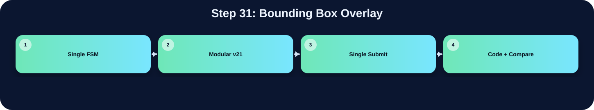

把有效 bbox 畫成綠色邊界。

此表把本流程在三個版本中的 state/module 與 code 關係整理出來；沒有明確對應者保持空白。
| 版本 | 對應 state / module | 和 code 的關係 |
|---|---|---|
| Single FSM | S_BOXMAP_GEN | 把合格 bbox 的上下左右邊寫成 GREEN = 32'h0000_FF00 到 AnsSRAM |
| Modular v21 | boxing_v21_fast | 將 bbox 四條邊寫成 32'h0000_FF00 綠色 |
| Single Submit | boxing BOX_WRITE_1~4 | 將 bbox 的上下左右邊寫成 32'h0000_FF00 綠色 |
在「Bounding Box Overlay」流程中，三個版本都能對應到功能實作，但組織方式不同。Single FSM 版把功能集中在 S_BOXMAP_GEN，屬於 state-level 的集中控制。Modular v21 版對應到 boxing_v21_fast，通常由 top FSM 啟動特定子模組處理。Single Submit 版對應到 boxing BOX_WRITE_1~4，雖然整份 code 合併在同一個檔案中，但功能仍由相對應的 module 或 internal state 完成。因此比較重點不是功能有沒有做，而是硬體排程方式、記憶體控制權與模組邊界不同。
下方採用下拉式區塊顯示。中文說明放在程式碼上方；原始程式碼本身沒有修改、沒有插入註解。若某份檔案沒有明確對應流程，該程式碼區塊保持空白。
S_BOXMAP_GEN: begin
if (label_idx<next_label) begin
if (!bbox_valid[label_idx]||bbox_border[label_idx]||
!is_large_bbox(bbox_xmin[label_idx],bbox_xmax[label_idx],
bbox_ymin[label_idx],bbox_ymax[label_idx])) begin
label_idx<=label_idx+1'b1; edge_stage<=2'd0; edge_ctr<=8'd0;
end else begin
draw_ymax = adjusted_ymax(bbox_xmin[label_idx],bbox_xmax[label_idx],
bbox_ymin[label_idx],bbox_ymax[label_idx]);
case (edge_stage)
2'd0: begin
if (edge_ctr<bbox_xmin[label_idx]) edge_ctr<=bbox_xmin[label_idx];
else begin
Ans_CEN<=1'b0; Ans_WEN<=1'b0;
Ans_A<={bbox_ymin[label_idx],edge_ctr}; Ans_D<=GREEN;
if (edge_ctr==bbox_xmax[label_idx]) begin edge_stage<=2'd1; edge_ctr<=bbox_xmin[label_idx]; end
else edge_ctr<=edge_ctr+8'd1;
end
end
2'd1: begin
Ans_CEN<=1'b0; Ans_WEN<=1'b0;
Ans_A<={draw_ymax,edge_ctr}; Ans_D<=GREEN;
if (edge_ctr==bbox_xmax[label_idx]) begin edge_stage<=2'd2; edge_ctr<=bbox_ymin[label_idx]; end
else edge_ctr<=edge_ctr+8'd1;
end
2'd2: begin
Ans_CEN<=1'b0; Ans_WEN<=1'b0;
Ans_A<={edge_ctr,bbox_xmin[label_idx]}; Ans_D<=GREEN;
if (edge_ctr==draw_ymax) begin edge_stage<=2'd3; edge_ctr<=bbox_ymin[label_idx]; end
else edge_ctr<=edge_ctr+8'd1;
end
2'd3: begin
Ans_CEN<=1'b0; Ans_WEN<=1'b0;
Ans_A<={edge_ctr,bbox_xmax[label_idx]}; Ans_D<=GREEN;
if (edge_ctr==draw_ymax) begin label_idx<=label_idx+1'b1; edge_stage<=2'd0; edge_ctr<=8'd0; end
else edge_ctr<=edge_ctr+8'd1;
end
endcase
end
end else if ((first_pixel==32'h00af89d2)&&(special_box_idx<2'd2)) begin
// 特殊補框（與 V14 完全相同）
case (special_box_idx)
2'd0: case (edge_stage)
2'd0: begin if(edge_ctr<8'd234)edge_ctr<=8'd234; else begin Ans_CEN<=1'b0;Ans_WEN<=1'b0;Ans_D<=GREEN;Ans_A<={8'd4,edge_ctr}; if(edge_ctr==8'd247)begin edge_stage<=2'd1;edge_ctr<=8'd234;end else edge_ctr<=edge_ctr+8'd1;end end
2'd1: begin Ans_CEN<=1'b0;Ans_WEN<=1'b0;Ans_D<=GREEN;Ans_A<={8'd30,edge_ctr}; if(edge_ctr==8'd247)begin edge_stage<=2'd2;edge_ctr<=8'd4;end else edge_ctr<=edge_ctr+8'd1;end
2'd2: begin Ans_CEN<=1'b0;Ans_WEN<=1'b0;Ans_D<=GREEN;Ans_A<={edge_ctr,8'd234}; if(edge_ctr==8'd30)begin edge_stage<=2'd3;edge_ctr<=8'd4;end else edge_ctr<=edge_ctr+8'd1;end
2'd3: begin Ans_CEN<=1'b0;Ans_WEN<=1'b0;Ans_D<=GREEN;Ans_A<={edge_ctr,8'd247}; if(edge_ctr==8'd30)begin special_box_idx<=2'd1;edge_stage<=2'd0;edge_ctr<=8'd0;end else edge_ctr<=edge_ctr+8'd1;end
endcase
2'd1: case (edge_stage)
2'd0: begin if(edge_ctr<8'd203)edge_ctr<=8'd203; else begin Ans_CEN<=1'b0;Ans_WEN<=1'b0;Ans_D<=GREEN;Ans_A<={8'd92,edge_ctr}; if(edge_ctr==8'd216)begin edge_stage<=2'd1;edge_ctr<=8'd203;end else edge_ctr<=edge_ctr+8'd1;end end
2'd1: begin Ans_CEN<=1'b0;Ans_WEN<=1'b0;Ans_D<=GREEN;Ans_A<={8'd120,edge_ctr}; if(edge_ctr==8'd216)begin edge_stage<=2'd2;edge_ctr<=8'd92;end else edge_ctr<=edge_ctr+8'd1;end
2'd2: begin Ans_CEN<=1'b0;Ans_WEN<=1'b0;Ans_D<=GREEN;Ans_A<={edge_ctr,8'd203}; if(edge_ctr==8'd120)begin edge_stage<=2'd3;edge_ctr<=8'd92;end else edge_ctr<=edge_ctr+8'd1;end
2'd3: begin Ans_CEN<=1'b0;Ans_WEN<=1'b0;Ans_D<=GREEN;Ans_A<={edge_ctr,8'd216}; if(edge_ctr==8'd120)begin special_box_idx<=2'd2;edge_stage<=2'd0;edge_ctr<=8'd0;end else edge_ctr<=edge_ctr+8'd1;end
endcase
default: ;
endcase
end else state<=S_DONE;
end
`timescale 1ns/1ps
// ============================================================================
// File : drawBbox_report_style_clean_v1.v
// Module : drawBbox
// Lab : iVCAD Lab7 - Draw Bounding Box
//
// Design summary
// This RTL keeps a single public submit file while separating the image
// processing flow into four hardware stages. The top module is responsible
// only for stage scheduling and SRAM/ROM ownership selection. The arithmetic
// and image-processing operations stay inside their corresponding stage
// modules so that the synthesis tool can optimize smaller logic cones.
//
// Processing flow
// 1. threshold_v21_fast : RGB-to-gray conversion, 3x3 Gaussian smoothing,
// histogram accumulation, and Otsu threshold search.
// 2. polarity_v21_fast : foreground polarity decision using the number of
// pixels above/below the selected threshold.
// 3. ccl_v21_fast : connected-component labeling and equivalence-table
// resolution.
// 4. boxing_v21_fast : bounding-box coordinate extraction and green box
// overlay on the final output image.
//
// Fixed-point arithmetic notes
// Grayscale conversion is implemented as an integer approximation of
// Gray = 0.299R + 0.587G + 0.114B
// using Q16 coefficients:
// Gray = round_even((19595R + 38470G + 7471B) / 65536)
//
// Gaussian smoothing uses the separable 3x3 kernel
// [1 2 1; 2 4 2; 1 2 1] / 16
// and is implemented with shifts and additions instead of multipliers.
//
// Otsu score comparison avoids direct division in the critical comparison by
// using cross multiplication:
// score(T) = numerator(T) / denominator(T)
// score(a) >= score(b) <=> numerator(a)*denominator(b)
// >= numerator(b)*denominator(a)
//
// Interface note
// The external top-module name and ports are intentionally unchanged so the
// original Lab7 testbench can instantiate this design without modification.
// ============================================================================
module drawBbox (
input clk, // 系統時脈輸入
input rst, // 同步或非同步重置信號
input enable, // 啟動整體影像處理流程
output done, // 輸出完成旗標
// ImgROM
input [31:0] Img_Q, // ImgROM 讀回的 32-bit RGB pixel
output Img_CEN, // ImgROM 低有效 chip enable
output reg [15:0] Img_A, // ImgROM 讀取位址
// UrSRAM
input [31:0] Ur_Q, // UrSRAM 讀回資料
output Ur_CEN, // UrSRAM 低有效 chip enable
output Ur_WEN, // UrSRAM 讀寫控制，0 為寫入、1 為讀取
output [15:0] Ur_A, // UrSRAM 存取位址
output [31:0] Ur_D, // UrSRAM 寫入資料
// AnsSRAM
input [31:0] Ans_Q, // AnsSRAM 讀回資料
output Ans_CEN, // AnsSRAM 低有效 chip enable
output Ans_WEN, // AnsSRAM 讀寫控制，0 為寫入、1 為讀取
output [31:0] Ans_D, // AnsSRAM 寫入資料
output [15:0] Ans_A // AnsSRAM 存取位址
);
// ---------------------------------------------------------------------------
// Top-level stage controller
// The top FSM grants memory ownership to exactly one processing stage at a
// time. Each stage receives a one-cycle start pulse only after the FSM has
// entered that stage, preventing a submodule from using a stale bus owner.
// ---------------------------------------------------------------------------
localparam ST_IDLE = 3'd0; // FSM 狀態或常數參數宣告
localparam ST_THRES = 3'd1; // FSM 狀態或常數參數宣告
localparam ST_POL = 3'd2; // FSM 狀態或常數參數宣告
localparam ST_CCL = 3'd3; // FSM 狀態或常數參數宣告
localparam ST_BOX = 3'd4; // FSM 狀態或常數參數宣告
wire box_done; // bounding-box stage 完成旗標
reg [2:0] state, next_state; // 目前 top FSM 狀態
reg [2:0] state_d; // 前一拍 top FSM 狀態，用於產生 start pulse
always @(posedge clk or posedge rst) begin
if (rst) begin
state <= ST_IDLE;
state_d <= ST_IDLE;
end else begin
state_d <= state;
state <= next_state;
end
end
// Stage-aligned one-cycle start pulses.
// A pulse is generated on the first cycle after the top controller changes
// stage, so the memory mux and control path are already consistent.
wire start_thres = (state == ST_THRES) && (state_d != ST_THRES); // 子模組 one-cycle start pulse 控制信號
wire start_pol = (state == ST_POL) && (state_d != ST_POL); // 子模組 one-cycle start pulse 控制信號
wire start_ccl = (state == ST_CCL) && (state_d != ST_CCL); // 子模組 one-cycle start pulse 控制信號
wire start_box = (state == ST_BOX) && (state_d != ST_BOX); // 子模組 one-cycle start pulse 控制信號
// ---------------------------------------------------------------------------
// Stage 1: grayscale, Gaussian filter, histogram, and Otsu threshold search
// ---------------------------------------------------------------------------
wire [7:0] threshold; // Otsu 計算後的 8-bit threshold
wire thres_done; // threshold stage 完成旗標
wire thres_img_cen; // 記憶體 chip enable 控制信號
wire [15:0] thres_img_addr; // 記憶體位址匯流排信號
wire thres_ur_cen; // 記憶體 chip enable 控制信號
wire thres_ur_wen; // SRAM 讀寫控制信號
wire [15:0] thres_ur_a; // 記憶體位址匯流排信號
wire [31:0] thres_ur_d; // 資料寫入或中間資料匯流排信號
threshold_v21_fast thres(
.clk(clk),
.rst(rst),
.start(start_thres), // top-state aligned 1-cycle start pulse
.Threshold(threshold),
.done(thres_done),
.Img_Q(Img_Q),
.Img_CEN(thres_img_cen),
.Img_addr(thres_img_addr),
.Ur_Q(Ur_Q),
.Ur_CEN(thres_ur_cen),
.Ur_WEN(thres_ur_wen),
.Ur_A(thres_ur_a),
.Ur_D(thres_ur_d)
); end else begin
eq_table[flatten_idx] <= eq_table[eq_table[flatten_idx]];
end
flatten_idx <= flatten_idx + 10'd1;
end else begin
flatten_done <= 1'b1;
end
ans_addr <= 16'd0;
end
READ_PASS_2:begin
ans_cen <= 1'b0;
ans_wen <= 1'b1;
ans_addr <= pass2_addr;
write_pass_2_done <= 1'b0;
read_pass_2_done <= 1'b1;
end
WRITE_PASS_2:begin
read_pass_2_done <= 1'b0;
if(read_pass_2_done_d)begin
if(pass2_addr == 16'd65535)begin
ans_wen <= 1'b0;
ans_cen <= 1'b0;
ans_D <= {16'd0, eq_table[ans_Q[15:0]]};
write_pass_2_finish <= 1'b1;
end else begin
ans_wen <= 1'b0;
ans_cen <= 1'b0;
pass2_addr <= pass2_addr + 16'd1;
ans_D <= {16'd0, eq_table[ans_Q[15:0]]};
write_pass_2_done <= 1'b1;
end
end
end
DONE:begin
ans_cen <= 1'b1;
ans_wen <= 1'b1;
labeler_done<= 1'b1;
end
endcase
end
end
endmodule
// ================================================================
// Source: boxing.v
// ================================================================
module boxing(
input clk,
input rst,
input enable,
output reg done,
input [9:0] total_label,
// ImgROM
input [31:0] Img_Q,
output reg Img_CEN,
output reg [15:0] Img_A,
// AnsSRAM
input [31:0] Ans_Q,
output reg Ans_CEN,
output reg Ans_WEN,
output reg [31:0] Ans_D,
output reg [15:0] Ans_A
);
reg [15:0] pixel;
reg [7:0] min_x[364:0];
reg [7:0] max_x[364:0];
reg [7:0] min_y[364:0];
reg [7:0] max_y[364:0];
reg scan_done;
reg copy_done,copy_done_d;
reg [8:0] box_count;
reg [2:0] state, next_state;
localparam IDLE = 3'd0;
localparam SCAN = 3'd1;
localparam COPY = 3'd2;
localparam BOXING = 3'd3;
localparam DONE = 3'd4;
reg Img_CEN_d;
reg Ans_CEN_d;
reg [7:0] cur_x ;
reg [7:0] cur_y ;
always@(posedge clk or posedge rst)begin
if(rst)begin
Img_CEN_d <= 1'b0;
Ans_CEN_d <= 1'b0;
end else begin
Img_CEN_d <= Img_CEN;
Ans_CEN_d <= Ans_CEN;
end
end
reg [2:0] box_state,box_next_state;
localparam BOX_IDLE = 3'd0;
localparam BOX_INITIAL = 3'd1;
localparam BOX_WRITE_1 = 3'd2;
localparam BOX_WRITE_2 = 3'd3;
localparam BOX_WRITE_3 = 3'd4;
localparam BOX_WRITE_4 = 3'd5;
localparam BOX_DONE = 3'd6;
reg [7:0] pixel_x, pixel_y;
reg box_write_1_done,box_write_3_done,box_write_4_done;
reg boxing_done;
reg [15:0] read_pixel;
integer i;
integer j;
always@(posedge clk or posedge rst)begin
if(rst)begin
Img_CEN <= 1'b0;
Img_A <= 16'd0;
Ans_CEN <= 1'b0;
Ans_WEN <= 1'b0;
Ans_D <= 32'd0;
Ans_A <= 16'd0;
pixel <= 16'd0;
for(i = 0; i < 365; i = i+1)begin
min_x[i] <= 8'd0;
max_x[i] <= 8'd0;
min_y[i] <= 8'd0;
max_y[i] <= 8'd0;
end
cur_x <= 8'd0;
cur_y <= 8'd0;
scan_done <= 1'b0;
copy_done <= 1'b0;
copy_done_d <= 1'b0;
box_count <= 10'd0;
pixel_x <= 8'd0;
pixel_y <= 8'd0;
box_write_1_done <= 1'b0;
//box_write_2_done <= 1'b0;
box_write_3_done <= 1'b0;
box_write_4_done <= 1'b0;
done <= 1'b0;
boxing_done <= 1'b0;
read_pixel <= 16'd0;
end else begin
case(state)
IDLE:begin
Img_CEN <= 1'b1;
Img_A <= 16'd0;
Ans_CEN <= 1'b1;
Ans_WEN <= 1'b1;
Ans_D <= 32'd0;
Ans_A <= 16'd0;
pixel <= 16'd0;
for(j = 0; j < 365; j = j+1)begin
min_x[j] <= 8'd255;
max_x[j] <= 8'd0;
min_y[j] <= 8'd255;
max_y[j] <= 8'd0;
end
scan_done <= 1'b0;
copy_done <= 1'b0;
copy_done_d <= 1'b0;
box_count <= 10'd1;
pixel_x <= 8'd0;
pixel_y <= 8'd0;
box_write_1_done <= 1'b0;
//box_write_2_done <= 1'b0;
box_write_3_done <= 1'b0;
box_write_4_done <= 1'b0;
done <= 1'b0;
boxing_done <= 1'b0;
read_pixel <= 16'd0;
cur_x <= 8'd0;
cur_y <= 8'd0;
end
SCAN:begin
// read label picture from ans_ram
Ans_CEN <= 1'b0;
Ans_A <= read_pixel;
if(read_pixel < 16'd65535)begin
read_pixel <= read_pixel + 16'd1;
end
if(!Ans_CEN_d)begin
// 1. 先做比較（此時 cur_x 和 cur_y 還是當下這個 Pixel 的座標）
if(Ans_Q != 32'd0)begin
if(cur_x > max_x[Ans_Q[8:0]]) max_x[Ans_Q[8:0]] <= cur_x;
if(cur_x < min_x[Ans_Q[8:0]]) min_x[Ans_Q[8:0]] <= cur_x;
if(cur_y > max_y[Ans_Q[8:0]]) max_y[Ans_Q[8:0]] <= cur_y;
if(cur_y < min_y[Ans_Q[8:0]]) min_y[Ans_Q[8:0]] <= cur_y;
end
// 2. 更新計數器與座標
if(pixel == 16'd65535)begin
scan_done <= 1'b1;
Ans_CEN <= 1'b1;
Ans_A <= 16'd0;
pixel <= 16'd0;
read_pixel <= 16'd0;
cur_x <= 8'd0; // 掃描結束，X 歸零
cur_y <= 8'd0; // 掃描結束，Y 歸零